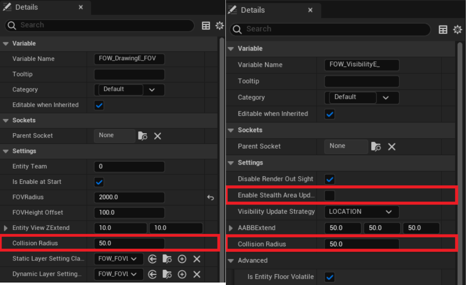
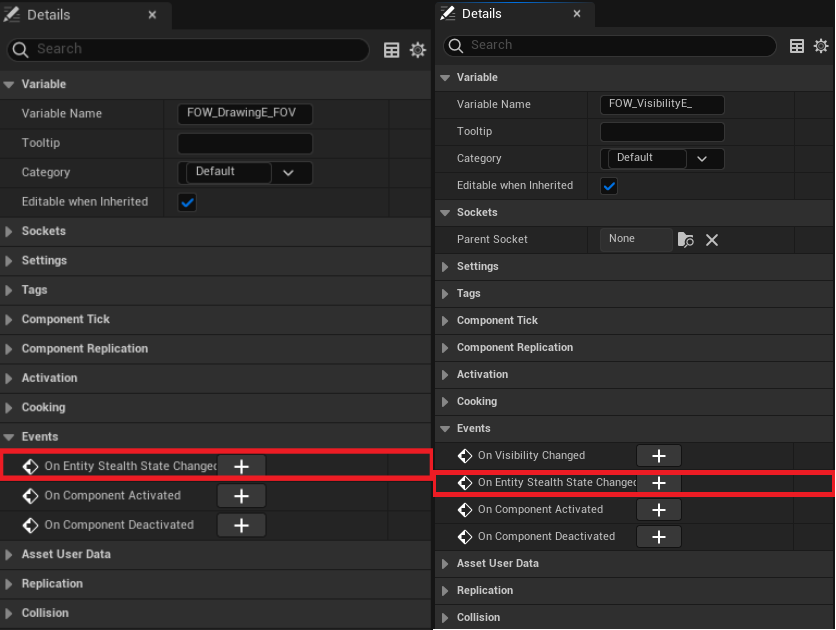
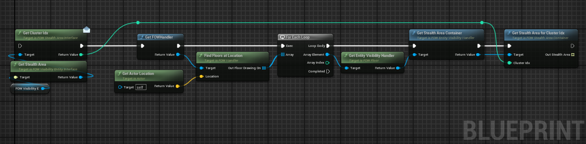

Stealth Area
This tutorial is about adding Stealth Area. No prerequisites are needed; you can use any map that you want.
Add Stealth Area
The Stealth Area feature simulates the bush system found in MOBA games. The system acts as a collider and projects shadows if the
area is near an FOVEntity. Once the entity gets too close or inside, the collider will be ignored, and the fog will be revealed.
The system is fully dynamic, just like the collision system, and it will automatically generate Clusters of Stealth Areas. All
areas in contact will be added to a cluster, allowing the FOVEntity to reveal the fog from the whole cluster.

There are two different objects to generate a Stealth Area:
UFOW_StealthAreaComponent: You can attach it to any actor.AFOW_PCG_StealthArea: A predefined actor that generates aStealth Areawhich can be filled procedurally with aStaticMesh.
Both of these objects inherit from IFOW_StealthArea_Interface, allowing you to create your custom tool.
Let's set it up by dropping an AFOW_PCG_StealthArea into your scene.

As with CustomCollision, mobility is important for optimization, and you will need to manually place the vertices of the geometry
defining the area.

Add vertices to the Custom Geometry Vertices and create the shape you want. All vertices need to have the same height; however, the
shape isn't limited.

For the AFOW_PCG_StealthArea, you can provide a StaticMesh, and the system will fill the area geometry with instances of the provided mesh.

You can tweak the generation with the following variables:
Seed: The seed used for randomness. -1 will use a different number for each generation.Space Between: The space separating each mesh.Random Offset: A random offset allowed for each instance to prevent alignment.Rotation Min/Max: The rotation range to apply to the mesh.Scale Range: The scale range to apply to the mesh.
Entities Settings
Aside from the Stealth Area itself, a few settings can be changed for the Entities.
Collision
To discover the Stealth Area fog, the entities need to be in collision with them. This is computed with a Circle-Geometry intersection,
allowing users to define how large their units are and at what distance the units will be considered inside the Stealth Area. You will find
a Collision Radius variable in both FOW_DrawingEntity_FOV_Component and FOW_VisibilityEntity_Component to change the collision distance.
For the Visible Entities, you will need to enable the StealthAreaUpdate by toggling on the variable. By design, it is set to false because
the collision chack can be expensive.

Delegates
To associate gameplay with the Stealth Area, you can bind the Entity owner to the OnEntityStealthStateChanged.

The delegate is simple and provides a boolean indicating whether the Entity has entered or left the Stealth Area.

Going Deeper
You might want to create gameplay that requires accessing the area actor within the Stealth Area. You can access the colliding area by calling
GetStealthArea. You can also query the other areas in the cluster with a chain of nodes:
- From the visibility entity, get the
StealthAreaand theClusterIdxfrom it. - Get the
FOWHandlerand find theFloorsat the entity's location. - Iterate over the floors and get the
EntityVisibilityHandler. - Get the
StealthAreaContainer. - Finally, call
GetStealthAreaForClusterIdx, which will return an array of stealth area interfaces that you can cast.

Documentation built with Unreal-Doc v1.0.9 tool by PsichiX